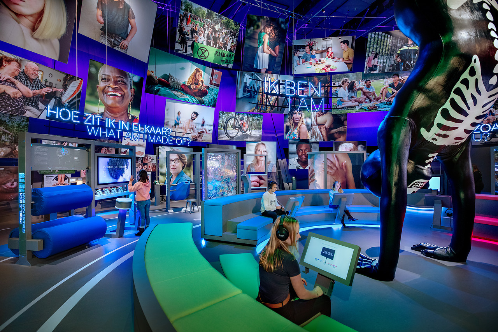
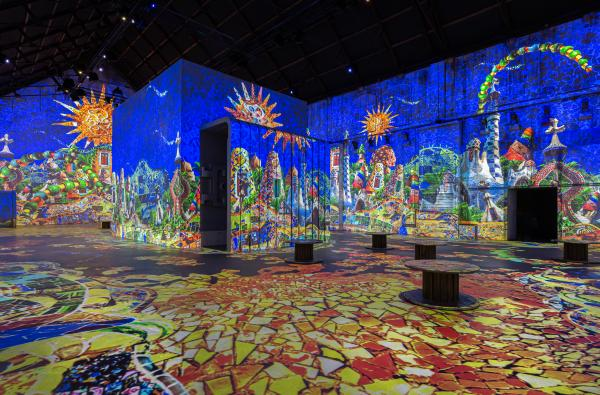

Musea
Betreed de betoverende dimensie van kunst, cultuur en
geschiedenis in musea. Hier nodigen we je uit voor
en intrigerende ontdekkingsreis door diverse tijdperken
en beschavingen. Elk tentoongesteld stuk vertelt een eigen
verhaal, en elke hoek onthult een nieuw en boeiend avontuur.
Moco Museum Amsterdam

Het Moco Museum (Modern Contemporary Museum) is gevestigd in Amsterdam en staat
bekend om zijn focus op moderne en hedendaagse kunst. Het museum bevindt zich aan
het Museumplein, in de buurt van andere beroemde musea zoals het Van Gogh Museum
en het Rijksmuseum.
Een van de opvallende kenmerken van het Moco Museum is de toewijding aan het tonen
van kunstwerken die vaak provocerend, eigentijds en soms controversieel zijn.
Bekende kunstenaars waarvan het werk te zien is geweest, zijn onder meer Banksy,
Salvador Dalí, Roy Lichtenstein, Andy Warhol en Keith Haring.
De collectie van het Moco Museum is vaak dynamisch en verandert regelmatig door
tijdelijke tentoonstellingen. Bezoekers kunnen een scala aan moderne kunstwerken
ervaren, van schilderijen en sculpturen tot multimedia-installaties.
Het museum streeft ernaar om kunst toegankelijk te maken voor een breed publiek
en biedt een eigentijdse en levendige benadering van de kunstbeleving.
Openingstijden:
- Maandag-Donderdag - 09:00-19:00
- Vrijdag-Zondag - 09:00-21:00
- 26-12 t/m 07-01 - 09:00-21:00
Speciale data:
- 24 december 09:00-20:00
- 25 december 09:00-20:00
- 31 december 09:00-20:00
- 1 januari 11:00-21:00
Ticketprijzen: (je bespaart 1-2 euro per ticket als je ze online aanschaft)
- Volwassene - €20,95 - €21,95
- Jeugd 7-17 jaar - €17,95 - €18,95
- Jeugd 0-6 jaar - Gratis
- Student - €17,95 - €18,95
Moco Museum Amsterdam is te bereiken via amsterdam@mocomuseum.com.
Honthorststraat 20
1071 DE Amsterdam

NEMO Science Museum
NEMO Science Museum is een populair wetenschapsmuseum in Amsterdam, Nederland.
Het museum is gevestigd aan het Oosterdok, nabij het Centraal Station, en staat
bekend om zijn interactieve en educatieve benadering van wetenschap en technologie.
Hier zijn enkele kenmerken van NEMO Science Museum:
- Interactiviteit: Een van de opvallende kenmerken van NEMO is de interactieve opzet. Bezoekers worden
aangemoedigd om te experimenteren, aan te raken en deel te nemen aan de verschillende
tentoonstellingen.
Dit maakt het museum bijzonder geschikt voor gezinnen en kinderen.
- Doelgroep: Hoewel NEMO geschikt is voor bezoekers van alle leeftijden, is het vooral gericht op
kinderen
en gezinnen. De interactieve opstellingen zorgen ervoor dat kinderen spelenderwijs leren over
wetenschap
en technologie.
- Tentoonstellingen: Het museum herbergt verschillende permanente en tijdelijke tentoonstellingen die
zich
richten op uiteenlopende wetenschappelijke onderwerpen, waaronder natuurkunde, scheikunde, biologie
en
technologie. De tentoonstellingen zijn ontworpen om bezoekers op een leuke en boeiende manier kennis
te
laten maken met wetenschappelijke principes.
- Educatieve programma's: Naast de tentoonstellingen biedt NEMO ook educatieve programma's en
workshops
aan. Scholen kunnen het museum bezoeken voor educatieve excursies, en er zijn regelmatig evenementen
en
activiteiten die gericht zijn op het stimuleren van interesse in wetenschap en technologie.
NEMO Science Museum is een boeiende bestemming voor zowel lokale bewoners als toeristen die
geïnteresseerd
zijn in wetenschap en op zoek zijn naar een interactieve en educatieve ervaring.
De algemene openingstijden van NEMO zijn:
- Dinsdag-Zondag - 10:00-17:30
In schoolvakanties, op feestdagen en van april tot september zijn ze ook op maandagen open.
De entreeprijzen van het museum zijn als volgt:
- Vanaf 4 jaar - €17,50
- CJP pas, College/studentenkaart - €8,75
- Musuemkaart, VriendenLoterij VIP-Kaart, I amsterdam City Card, Stadspas Amsterdam, ICOM kaart, NEMO
jaarpas/voucher - Gratis
- Begeleiding bezoeker met beperking - Gratis
- Begeleiding Autipas - Gratis
Je kunt ook een museumkaart aanschaffen bij de kassa in het museum
- Volwassene - €75 (incl. €4,95 inschrijfkosten)
- Jongeren (t/m 18 jaar) - €39 (incl. €4,95 inschrijfkosten)
Voor bezoekers jonger dan 13 jaar, is het verplicht om een volwassene als begeleider bij je te hebben.
NEMO Science Museum is te bereiken via het telefoonnummer: 020-531 32 33 en het email adres:
info@e-nemo.nl.
NEMO Science Museum
Oosterdok 2
1011 VX Amsterdam
Fabrique Des Lumières, Amsterdam

Noem het een modern museum, of een meeslepende, zinnenprikkelende,
audiovisuele totaalervaring. Maar hoe je het ook noemt: Fabrique des Lumières
is een belevenis die draait om kunst. Bedoeld om te prikkelen, te raken en overdonderen.
Toegankelijk voor iedereen en uniek in z’n soort.
In Fabrique des Lumières wordt kunst tot leven gewekt: het werk van de
grootste artiesten uit de geschiedenis, gegoten in een digitale ode van beeld en geluid.
Daarbij maken we gebruik maken van state-of-the-art technologie die volledig tot z’n recht
komt in de grote ruimtes van de Westergasfabriek in Amsterdam.
Omdat er in Fabrique Des Lumières alleen exposities worden getoond verschilt het aanbod van de kunst die
te
zien is.
Daarom zijn er niet echt openingstijden aan te binden en zou je voor eventuele informatie over de
exposities
op hun website
moeten kijken.
De tarieven staan wel vast:
- Volwassene - €16
- Studenten, EYC/CJP pas - €13
- I amsterdam City Card - €12
- Jeugd 5-17 jaar - €12
- Familietarief (2 volwassene + 2 Jeugd 5-17 jaar) - €48
- Kinderen tot 5 jaar - Gratis
- Stadspas (alleen beschikbaar bij de ticketbalie) - Gratis
Voor vragen waarvan het antwoord niet op hun
website
te vinden is kun je hen mailen naar service@fabrique-lumieres.com
Pazzanistraat 37
1014 DB Amsterdam, Nederland